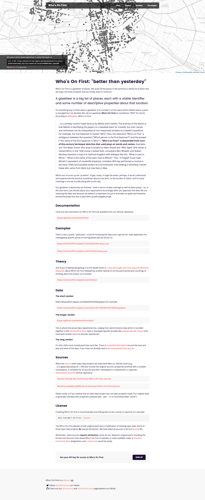

Redesigning and Rebuilding the Who's On First website This is a blog post by sdombkow that was published on Jul 28, 2017 and tagged whosonfirst, data, design and interns
My name is Scott and I am an intern on the Mapzen data team this summer. I am also pursuing a graduate degree at the Carnegie Mellon School of Design.
At Mapzen, I am tasked with improving how Who’s On First (WOF) is presented to the world and increasing its accessibility to a wider range of users.
For the majority of my first three weeks at Mapzen, I have focused on the redesign and the rebuilding of the WOF website. (For those who aren’t familiar with the current website, here’s a full-size image)
The website currently contains:
- an introduction/explanation of Who’s On First (What is WOF?, What state WOF is in?)
- a section with links to WOF documentation
- a section with links to WOF tools (ex: WOF spelunker (a tool to browse WOF data))
- a section with links to the thinking surrounding the project (What is the purpose of WOF?, How are WOF places organized?)
- a section with links to access WOF data and explanations on how the data is organized (Where does the data live?, Why is the data organized that way?)
- a section with links to WOF sources (human-friendly and JSON formats)
- a section dedicated to licensing and how to credit WOF and other projects properly
##Goals
After gaining a better understanding of the website and the project itself, I developed four goals to help guide the redesign:
- Provide an overview of the project showing the entirety of the thought put into the project, while not being so overwhelming as to scare potential users off.
- Provide the tools to immediately utilize WOF.
- Provide the tools for deeper exploration into WOF.
- Get individuals excited about the project.
##Users
I also began to think about the users of the website. Are they all similar? Are they coming to the project for different reasons? What kind of backgrounds and experiences do they bring with them?
I concluded that the majority of these users will come from three different groups.
- Users actively working on a project that could benefit from WOF. They are not stumbling upon the project, they have come to the website with a specific purpose. They have either used WOF before or have background knowledge about WOF. They have some technical knowledge.
- Users not actively working on a project that could benefit from using WOF. These users are interested in WOF, but don’t have an immediate need for it. They are interested in learning about the project, but are not looking for in-depth knowledge. They may or may not have technical knowledge.
- Users who stumble upon WOF. They come to the project without preconceptions. They may never have a use for WOF, but may spend some time on the page if they find it interesting.
##Ideation
With established goals and thoughts concerning website users, new questions began popping up.
- How can we most effectively allow for understanding of WOF?
- What are the most effective ways of visualizing WOF?
- Can understanding of WOF be acquired through some sort of interaction?
- How can users directly interact with the data?
- How can we replicate a user’s interaction with WOF outside the website within the website?
- Can we utilize the website’s content to create a dialog that gets the attention of a user while also showing the depth of the project?
- How can we visualize that this project is a continuous work in progress?
With these questions and others in mind, I searched for answers moving from lower fidelity to higher fidelity prototypes.
Note: Throughout the design process, I have been using the Mapzen Styleguide so that anything I was designing or building would align with the Mapzen visual style and other Mapzen product pages.
##Prototyping
One of the first things I focused on was how users directly interact with WOF data. Do we create some sort of interactive component where individuals can immediately interact and get a sense of the data made available by WOF? If so, what powers that component? One feature that WOF provides is an API. We talked about this a few months back:
The API provides programmatic access for you and your robots to all the Who’s On First data. You can query individual places and their relations, look for concordances and perform basic spatial queries. You can also use the API to query things like all the different placetypes or sources for data.
While some of the API queries require background knowledge, a number of them could be understood by a first-time user, like getByLatLon.
Knowing that I could use the API, I explored different ways the API methods could be visualized.
Could we create a card with tabs that would display specific fields based on the tab selected?
Results would appear below the tabs and fields.
Or we could create a map that would allow for interaction? A user could select a specific point or draw a box on the map and results based on that point or rectangle would appear.
I had some concerns with this approach. Would the interaction interfere with the main navigation of the page? Should the first thing be an element relying on user interaction? I ultimately came to the conclusion that this first element should not rely on a user’s interaction.
###Initial Component
Since I didn’t want the first element to rely on a user interacting with it, I created further iterations.
I knew that I wanted the element to immediately capture the user’s attention and show some of the capabilities of WOF. With that in mind, I created the mockup below where users are able to see WOF places depicted by red circles.

I showed it to my team and they suggested including the API command powering the visualization.

When initially building this out, I’d planned to detect a user’s location and run a WOF API query based on that location. However, this can lead to potential problems with GeoIP lookups. The mockup is now built to randomly select one of five locations and run a WOF API query based on that location.
###Interactive Component
After building out the initial component, I still wanted to create an element that would allow for a deeper and more direct interaction with WOF. Consulting with my team about the most important API queries, we settled on:
- getByLatLon: returns WOF places intersecting a latitude and longitude
- getNearby: returns all the WOF records near a point
- getIntersects: returns all the WOF places intersecting a bounding box
Using my earlier mockups as inspiration, I thought about ways a user could run these queries through an interface. This inspired another set of mockups.

These brought up a new question.
Could you combine the getByLatLong function with the getNearby function? The getByLatLong function is essentially equivalent to the getNearby function, without the radius argument.
This convinced me to combine the getByLatLong and getNearby queries into one type of interaction, while the getIntersects query would be represented by a different interaction. They would be represented by the icons in the top left of the mockup below.

The point (dot) icon would represent the getByLatLong and getNearby interaction. When active, users would be able to select a point on the map and/or specify a radius, latitude, and longitude in a window on the bottom left. The box icon would represent the getIntersects interaction. When active, users would be able to draw a box on the map or specify minimum and maximum latitudes and longitudes in a window on the bottom left. The results of the those queries would be seen in the right hand column, followed by the API query run to acquire those results.
We would also need a walkthrough to help users understand the functionality of the component.

After showing my team this set of mockups, they mentioned including descendants. I felt it would difficult for users to utilize the point and box functionality to find specific places and their descendants.
Users could search for a place and then view the descendants of those places, but the walkthrough would have to be broken up.
I also explored different possible implementations.
For instance, could you recognize a place, find that place’s locality, find that locality’s parent, and then use that parent to find different places on the same level as the original place’s locality? You could then give users the ability to view the descendants of those localities.

Or could you provide users an interface to move from one level to another.

I ultimately believe that these implementations would not work as well as a search and would lead to more difficulty for the user.
###Stats
An additional way to create a dialog that could capture the attention of a user, while showing the depth of the project, would be through stats. WOF provides an ample amount of stats that could be relevant to a wide variety of users. At the same time, stats must be limited. You do not want to be consistently processing statistics in the background.
With the stats, I also wanted to avoid the parts of WOF that require background knowledge. Users shouldn’t have to discern what things mean, and the stats should be relatively simple.
So what statistics would users understand?
- Total # of records - users definitely understand records when given some context
- Total # of countries - users understand countries too
- Total # of marine areas - a user may not immediately connect oceans, rivers, and seas with marines areas, maybe this one should be avoided
- Total # of regions - users have a general sense of regions
- Total # of counties - counties should be avoided, there are a greater number of localities than counties
- Total # of localities - users will not be able to immediately identify what a locality is, but we can add a small explanation that a locality is a city or town
- Total # of neighborhoods - probably does not fit, not every venue has a neighborhood, users from different areas may identify a neighborhood differently
- Total # of venues - users should understand this and it is at the core of WOF
Further exploration needs to take place to understand how to organize and visualize the stats. Should it go from higher levels place types (countries, regions, etc…) to lower level place types (venues, etc…)? Should these stats be context specific? How much more computation would that require? Is that computation worth it?


###Getting Users Started
The website should also provide users with tools to immediately get started with WOF. This includes the different options a user could take to use WOF. For example, if a user knows the specific path and ID for a particular place, the website should provide that user with an example URL they could use to retrieve data. Or if the user wants to use the WOF API, that user should see a number of example queries and links to additional documentation. A link to the Github repo where all WOF data lives would also work, users could then download their own version of the data if they so desire. You can find a mockup below to see just how this could work.
###Information Architecture
Currently, part of WOF lives solely on Github. One example of this is source information. In order to make WOF more useable we plan to clone selected parts of the information on Github to the website.
Some subpages already exist, for example the theory and data page, but at the very least there should be a page for tools, the blog, data, and docs. All these topics are complicated. By creating separate pages, less emphasis can be paid to those subjects on the home page.
We are currently working on just how all this information will be organized. Below you can find some mockups.

{kind=link}
{kind=link}
{kind=link}
{kind=link}
{kind=link}
{kind=link}
{kind=link}
{kind=link}
{kind=link}
{kind=link}
{kind=link}
##Where Are We Now?
Below you will see how the current site looks in a development environment. We just pushed this out to production.
 See full-size image
{kind=link}
##Where Are We Going To Be?
Over the course of the next couple weeks, we plan to make further improvements to the website in the following areas:
- Building out the interactive component.
- Creating a narrative around WOF stats.
- Working on the information architecture of the website.
- Deciding what information lives on the website and what information lives on Github.
Let us know what you think at @alloftheplaces!